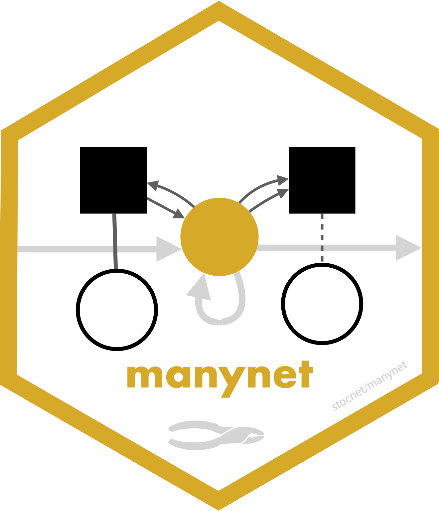

About the package
While many awesome packages for network analysis exist for R, all with their own offerings and advantages, they also all have their own vocabulary, syntax, and expected formats for data inputs and analytic outputs. Many of these packages only work on some types of networks (usually one-mode, simple, directed or undirected networks) for some types of analysis; if you want to analyse a different type of network or try a different analysis, a different package is needed. This can make learning and using network analysis tools in R challenging.
By contrast, manynet offers many tools that help researchers make, manipulate, and modify many (if not most) types and kinds of networks, including matrices, edgelists, and objects from other packages such as igraph, network, tidygraph, {diffnet}, and {siena}, as well as one-mode and two-mode, directed and undirected, weighted, unweighted, and signed, longitudinal and dynamic networks. If you have social network data, manynet probably has the tools to help you work with it.
NB: If you are looking for the visualisation functions that used to be in manynet, these have been migrated to their own package autograph. If you are looking for the network analytic functions that used to be in manynet, these have been migrated to their own package netrics. If you install and load migraph, all these packages will be installed and loaded and you can use all functionality, past and present.
Making
Networks can come from many sources and be found in many different formats: some can be found in this or other packages, some can be created or generated using functions in this package, and others can be downloaded from the internet and imported from your file system. manynet provides tools to make networks from all these sources in any number of common formats.
Importing network data
manynet offers a number of options for importing network data found in other repositories. Besides importing and exporting to Excel edgelists, nodelists, and (bi)adjacency matrices, there are specific routines included for UCINET, Pajek, and GraphML files, e.g.:

If you cannot remember the file name/path, then just run read_*() with the parentheses empty, and a file selection popup will open so that you can browse through your file system to find the file. Usually both read_*() and write_*() are offered to make sure that manynet is compatible with your larger project and analytic workflow.
Identifying network data
There may be no need to import network data though, if that network data already exists in a package in R. To facilitate testing and to contribute to an ecosystem of easily accessible network data, particularly for pedagogical purposes, we include a number of classical and instructional network datasets, all thoroughly documented and ready for analysis. Here are just a few examples, all available in manynet:

The package includes three families of network data:
- Classic/instructional networks:
ison_adolescents,ison_algebra,ison_brandes,ison_dolphins,ison_emotions,ison_hightech,ison_judo_moves,ison_karateka,ison_koenigsberg,ison_laterals,ison_lawfirm,ison_monks,ison_networkers,ison_physicians,ison_southern_women - Fictional networks:
fict_actually,fict_friends,fict_greys,fict_lotr,fict_marvel,fict_potter,fict_starwars,fict_thrones - International/political networks:
irps_911,irps_blogs,irps_books,irps_nuclear,irps_revere,irps_usgeo,irps_wwi
Inventing network data
manynet includes functions for making networks algorithmically. The create_* group of functions create networks with a particular structure, and will always create the same format from the same inputs, e.g.:

See also create_components(), create_core(), create_cycle(), create_degree(), create_empty(), create_explicit(), create_filled(), create_lattice(), create_motifs(), create_ring(), create_star(), create_tree(), create_wheel(), create_windmill().
The generate_* group of functions generate networks from generative mechanisms that may include some random aspect, and so will return a different output each time they are run, e.g.:

See also generate_citations(), generate_configuration(), generate_fire(), generate_islands(), generate_man(), generate_random(), generate_scalefree(), generate_smallworld(), generate_utilities().
Note that all these functions can create directed or undirected, one-mode or two-mode networks. Creating two-mode networks is as easy as passing the first argument (n) a vector of two integers instead of one. For example, while n = 15 will create a one-mode network of 15 nodes, whereas n = c(10,5) will create a two-mode network of 10 nodes in the first mode, and 5 nodes in the second mode. Some of these functions wrap existing algorithms in other packages, while others are unique offerings or add additional formats, e.g. two-mode networks.

Inventing data on networks
manynet also includes functions for simulating diffusion or learning processes over a given network:
The diffusion models include not only SI and threshold models, but also SIS, SIR, SIRS, SEIR, and SEIRS. These simulations return results that can be analysed with the network-level and node-level diffusion measures in netrics.
Manipulating
manynet offers comprehensive tools for manipulating networks, including coercing between formats and using familiar dplyr-style verbs to work with nodes, ties, and their attributes.
Translating network data
Once you have imported network data, identified network data in this or other packages in R, or invented your own, you may need to translate this data into another class for analysis. manynet’s as_*() functions can be used to coerce objects from one of many common classes into any other. Below is a directed graph showing the currently available options:

These functions are designed to be as intuitive and lossless as possible, outperforming many other class-coercion packages.
We use these functions internally in every manynet, autograph, netrics, and migraph function to (1) allow them to be run on any compatible network format and (2) use the most efficient algorithm available. This makes all these packages compatible with your existing workflow, whether you use base R matrices or edgelists as data frames, {igraph}, {network}, or {tidygraph}, and extensible by developments in those other packages too.
Wrangling with dplyr-style verbs
manynet offers a set of dplyr-inspired verbs for working directly with network nodes, ties, and their attributes. These verbs follow the familiar tidyverse grammar, making network manipulation intuitive for R users:
ison_southern_women %>%
mutate_ties(weight = 1) %>%
filter_nodes(node_is_mode(ison_southern_women)) %>%
select_nodes(name)Available verbs for manipulating nodes: mutate_nodes(), filter_nodes(), select_nodes(), rename_nodes(), arrange_nodes(), bind_nodes(), add_nodes(), delete_nodes(), join_nodes()
Available verbs for manipulating ties: mutate_ties(), filter_ties(), select_ties(), rename_ties(), arrange_ties(), bind_ties(), add_ties(), delete_ties(), join_ties()
Available verbs for manipulating changes: add_changes(), apply_changes(), arrange_changes(), bind_changes(), collect_changes(), delete_changes(), describe_changes(), filter_changes(), gather_changes(), mutate_changes(), rename_changes(), select_changes()
Available verbs for manipulating globals: mutate_globals(), rename_globals(), select_globals()
Modifying
Before or during analysis, you may need to modify the structure of the network you are analysing. manynet’s to_*() functions can be used on any class object to reformat, transform, or split networks into networks with other properties.
Reformatting
Reformatting means changing the format of the network, e.g. from directed to undirected via to_undirected().

See also to_directed(), to_named(), to_permuted(), to_reciprocated(), to_redirected(), to_signed(), to_undirected(), to_unnamed(), to_unsigned(), to_unweighted(), to_weighted().
Transforming
Transforming means changing the dimensions of the network, e.g. from a two-mode network to a one-mode projection via to_mode1() or to_mode2().

Compared with other packages, manynet’s to_mode1() and to_mode2() functions are more flexible and efficient, work with all input classes, offer additional weighting options (such as Jaccard or cosine normalisation), and retain node and edge attributes.
Splitting and Joining
Splitting means separating a network, e.g. from a whole network to the various ego networks via to_egos().

Those functions that split a network into a list of networks are distinguishable as those to_*() functions that are named in the plural. Split data can be rejoined using the from_*() family of functions.
See also to_blocks(), to_components(), to_egos(), to_no_isolates(), to_slices(), to_subgraphs(), to_ties(), to_waves() and from_egos(), from_slices(), from_subgraphs(), from_ties(), from_waves().
Installation
Stable
The easiest way to install the latest stable version of manynet is via CRAN. Simply open the R console and enter:
install.packages('manynet')
library(manynet) will then load the package and make the data and tutorials (see below) contained within the package available.
Development
For the latest development version, for slightly earlier access to new features or for testing, you may wish to download and install the binaries from Github or install from source locally. The latest binary releases for all major OSes – Windows, Mac, and Linux – can be found here. Download the appropriate binary for your operating system, and install using an adapted version of the following commands:
- For Windows:
install.packages("~/Downloads/manynet_winOS.zip", repos = NULL) - For Mac:
install.packages("~/Downloads/manynet_macOS.tgz", repos = NULL) - For Unix:
install.packages("~/Downloads/manynet_linuxOS.tar.gz", repos = NULL)
To install from source the latest main version of manynet from Github, please install the remotes package from CRAN and then:
- For latest stable version:
remotes::install_github("stocnet/manynet") - For latest development version:
remotes::install_github("stocnet/manynet@develop")
Relationship to other packages
This package stands on the shoulders of several incredible packages.
In terms of the objects it works with, this package aims to provide an updated, more comprehensive replacement for intergraph. As such it works with objects in igraph and network formats, but also equally well with base matrices and edgelists (data frames), and formats from several other packages.
The user interface is inspired in some ways by Thomas Lin Pedersen’s excellent tidygraph package, though makes some different decisions, and uses the quickest igraph or network routines where available.
manynet has inherited most of its core functionality from its maternal package, migraph, but has also devolved its visualisation capabilities to its sibling package, {autograph}, and its network analytic capabilities to its sibling package, {netrics}. {migraph} continues to offer modelling functions that builds upon the architecture provided by manynet. For more, please check out migraph and the other stocnet packages directly.
Funding details
Development on this package has been funded by the Swiss National Science Foundation (SNSF) Grant Number 188976: “Power and Networks and the Rate of Change in Institutional Complexes” (PANARCHIC).